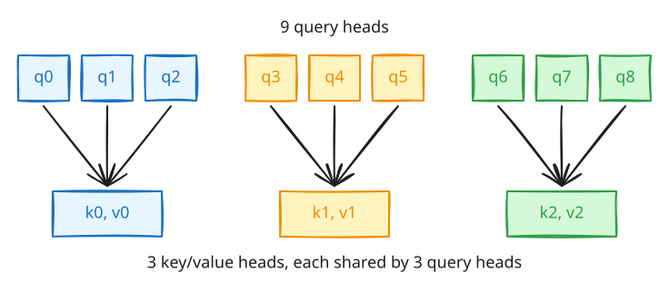
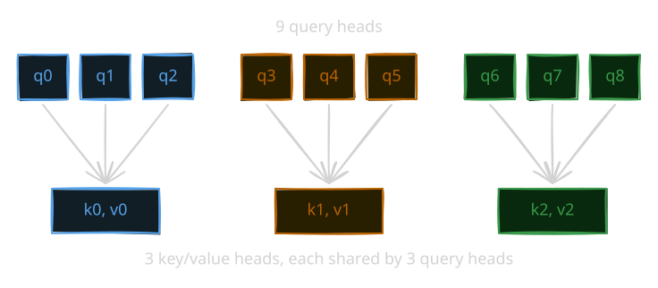

1.5 Attention


Attention is how a position gathers information from earlier positions. In “The capital of France is”, predicting the next token requires the last position to look back at “capital” and “France”. This section builds causal grouped-query attention, the variant SmolLM2 and most current models use, first from basic operations and then with MAX’s flash attention kernel.
Show the setup 28 lines
import logging
import math
import time
import warnings
import numpy as np
import plotly.graph_objects as go
from max import functional as F
from max.driver import CPU
from max.dtype import DType
from max.nn import Embedding, RMSNorm
from max.pipelines import AutoTokenizer
from max.tensor import Tensor, default_device, default_dtype
from minillm import viz
from minillm.device import pick_device
from minillm.config import MODEL_ID, LlamaConfig
from minillm.layers import apply_rope, rope_cos_sin
from minillm.weights import load_checkpoint, select
logging.getLogger("max").setLevel(logging.ERROR)
# MAX runs some kernels, such as flash attention, through a compiled
# fallback when executing eagerly, and warns each time it does.
warnings.filterwarnings("ignore", message="The eager interpreter failed")
DEVICE = pick_device() # a GPU if MAX finds one, otherwise the CPU
config = LlamaConfig.from_pretrained()
weights = load_checkpoint()
The computation
Each position projects its hidden vector into three vectors: a query for what the position is looking for, a key for what it offers, and a value for what it passes on.
A position’s output is a weighted average of the values of all positions it may see, weighted by how well its query matches their keys:
\[\mathrm{attention}(Q, K, V) = \mathrm{softmax}\!\left(\frac{Q K^\top}{\sqrt{d}} + M\right) V\]
Dividing by \(\sqrt{d}\), with \(d\) the head dimension, keeps the scores in a range where softmax still has a useful gradient. \(M\) is the causal mask.
The model runs several heads in parallel, each with its own projections, so different heads can track different relationships. SmolLM2 has 9 heads of 64 dimensions.
The causal mask
A language model predicts each token from the tokens before it, so position i must not see positions after i. The mask adds \(-\infty\) to those scores, and softmax turns them into zero weight.
The mask takes separate query and key lengths, so it also works when new queries attend to cached keys, as with the KV cache in Section 1.8. Here the lengths are equal.
Show causal_mask 30 lines
from __future__ import annotations
import math
from max import functional as F
from max.driver import Device
from max.dtype import DType
from max.graph import Dim
from max.nn import Linear, Module
from max.nn.kernels import flash_attention
from max.tensor import Tensor
from max.tensor.sharding import DeviceMesh
from minillm.config import LlamaConfig
from minillm.layers import apply_rope, rope_cos_sin
def causal_mask(
q_len: int | Dim, kv_len: int | Dim, device: Device | DeviceMesh
) -> Tensor:
"""Returns a ``[q_len, kv_len]`` additive mask for queries at the last
``q_len`` of ``kv_len`` positions: 0 where a query may attend, -inf
where it may not. The lengths may be ints or symbolic dimensions."""
blocked = F.broadcast_to(
Tensor(float("-inf"), dtype=DType.float32, device=device),
[q_len, kv_len],
)
return F.band_part(
blocked, num_lower=None, num_upper=kv_len - q_len, exclude=True
)
Saved to minillm/attention.py.
causal_mask(4, 4, DEVICE)
Tensor([ 0 -inf -inf -inf
0 0 -inf -inf
0 0 0 -inf
0 0 0 0], dtype=DType.float32, device=Device(type=gpu,id=0))
Grouped-query attention
SmolLM2 has 9 query heads but only 3 key/value heads: each key/value head is shared by a group of 3 query heads. This is grouped-query attention (GQA). It costs little quality, and it makes the keys and values the model must store per token 3 times smaller, which matters once you cache them (Section 1.8).


To compute it with plain matrix products, repeat each key/value head 3
times with broadcast_to:
def repeat_kv(x: Tensor, n_rep: int) -> Tensor:
"""Repeats each head of ``[batch, seq, kv_heads, dim]`` ``n_rep`` times."""
batch, seq, kv_heads, dim = x.shape
x = x.reshape([batch, seq, kv_heads, 1, dim])
x = F.broadcast_to(x, [batch, seq, kv_heads, n_rep, dim])
return x.reshape([batch, seq, kv_heads * n_rep, dim])
def naive_attention(q: Tensor, k: Tensor, v: Tensor, mask: Tensor) -> Tensor:
"""Computes causal attention with basic operations.
``q`` is ``[batch, seq, heads, dim]``; ``k`` and ``v`` may have fewer
heads, which are repeated to match.
"""
k = repeat_kv(k, q.shape[2] // k.shape[2])
v = repeat_kv(v, q.shape[2] // v.shape[2])
q, k, v = (t.permute([0, 2, 1, 3]) for t in (q, k, v)) # heads first
scores = (q @ k.transpose(-1, -2)) / math.sqrt(int(q.shape[-1])) + mask
return (F.softmax(scores) @ v).permute([0, 2, 1, 3])
Saved to minillm/attention.py.
Look at real attention
Run layer 0’s projections on a real sentence: embed the tokens, normalize, project to queries and keys, apply RoPE, and look at the attention weights.
tokenizer = AutoTokenizer(MODEL_ID)
ids = tokenizer(
["The capital of France is Paris, and the capital of Italy is"]
)["input_ids"][0]
tokens = [tokenizer.decode([i]) for i in ids]
seq = len(ids)
with default_device(DEVICE), default_dtype(DType.float32):
embed = Embedding(config.vocab_size, dim=config.hidden_size)
norm = RMSNorm(config.hidden_size, eps=config.rms_norm_eps)
embed.load_state_dict({"weight": weights["model.embed_tokens.weight"]})
norm.load_state_dict(select(weights, "model.layers.0.input_layernorm."))
h = norm(embed(Tensor(np.array([ids]), device=DEVICE)))
wq = Tensor(weights["model.layers.0.self_attn.q_proj.weight"], device=DEVICE)
wk = Tensor(weights["model.layers.0.self_attn.k_proj.weight"], device=DEVICE)
q = (h @ wq.T).reshape([1, seq, config.num_attention_heads, config.head_dim])
k = (h @ wk.T).reshape([1, seq, config.num_key_value_heads, config.head_dim])
cos, sin = rope_cos_sin(config.head_dim, config.rope_theta, 0, seq, DEVICE)
q, k = apply_rope(q, cos, sin), apply_rope(k, cos, sin)
mask = causal_mask(seq, seq, DEVICE)
k_full = repeat_kv(k, 3).permute([0, 2, 1, 3])
scores = (q.permute([0, 2, 1, 3]) @ k_full.transpose(-1, -2)) / math.sqrt(
config.head_dim
) + mask
probs = F.softmax(scores).to_numpy()[0] # [heads, seq, seq]
Show the code 47 lines
# Number the labels so that they stay unique when a token repeats.
labels = [f"{i}: {t!r}" for i, t in enumerate(tokens)]
pairs = [[[labels[i], labels[j]] for j in range(seq)] for i in range(seq)]
visible = np.tri(seq, dtype=bool) # masked cells are left blank, not drawn as 0
heads = [
[
go.Heatmap(
z=np.where(visible, probs[head], np.nan),
customdata=pairs,
zmin=0,
zmax=1,
coloraxis="coloraxis",
hovertemplate="query %{customdata[0]}<br>key %{customdata[1]}<br>weight %{z:.2f}<extra></extra>",
)
]
for head in range(config.num_attention_heads)
]
fig = go.Figure(
layout=dict(
title="Layer 0 attention weights: rows are queries, columns are the keys they attend to",
height=640,
coloraxis=dict(
colorscale=viz.SEQUENTIAL,
cmin=0,
cmax=1,
colorbar=dict(title="weight", thickness=12),
),
xaxis=dict(
tickvals=list(range(seq)),
ticktext=tokens,
tickangle=-45,
showgrid=False,
),
yaxis=dict(
tickvals=list(range(seq)),
ticktext=tokens,
autorange="reversed",
scaleanchor="x",
showgrid=False,
),
)
)
viz.show(
viz.with_slider(
fig, heads, [str(h) for h in range(config.num_attention_heads)], "head "
)
)
Each row is a query position; each column is a key it attends to. Hover over a cell to read its weight, and move the slider to change heads. The upper triangle is empty: that is the causal mask. The heads differ. Heads 7 and 8 put the most weight on the first token, which models use as a resting place when nothing else is relevant. Others, such as heads 2 and 5, put more weight on the current token.
The attention module
The module projects to queries, keys, and values, applies RoPE, attends, and
projects the heads back to the hidden size with o_proj. Splitting project
from forward lets Section 1.8
reuse it with a cache.
It creates the RoPE tables and the mask on x.mesh, the set of devices that
hold x. Here that is one device; in
Chapter 2 the same code runs on several
devices at once.
For the attention itself it uses flash_attention from
max.nn.kernels, which takes grouped heads directly. Flash
attention computes the same result as naive_attention but never builds the
per-head [seq, seq] score matrices: it processes keys in blocks and keeps
a running softmax. This module still passes a dense [seq, seq] mask, one for
the whole batch rather than one per head; production kernels take a causal flag
instead, so their memory grows with the sequence length rather than its square.
Show Attention 51 lines
class Attention(Module):
"""Causal grouped-query attention with rotary position embeddings."""
def __init__(self, config: LlamaConfig) -> None:
self.num_heads = config.num_attention_heads
self.num_kv_heads = config.num_key_value_heads
self.head_dim = config.head_dim
self.rope_theta = config.rope_theta
hidden = config.hidden_size
self.q_proj = Linear(hidden, self.num_heads * self.head_dim, bias=False)
self.k_proj = Linear(
hidden, self.num_kv_heads * self.head_dim, bias=False
)
self.v_proj = Linear(
hidden, self.num_kv_heads * self.head_dim, bias=False
)
self.o_proj = Linear(self.num_heads * self.head_dim, hidden, bias=False)
def project(
self, x: Tensor, start: int | Dim | Tensor
) -> tuple[Tensor, Tensor, Tensor]:
"""Returns RoPE-rotated queries and keys, and values, for ``x``,
whose first position is ``start``."""
batch, seq, _ = x.shape
q = self.q_proj(x).reshape([batch, seq, self.num_heads, self.head_dim])
k = self.k_proj(x).reshape(
[batch, seq, self.num_kv_heads, self.head_dim]
)
v = self.v_proj(x).reshape(
[batch, seq, self.num_kv_heads, self.head_dim]
)
cos, sin = rope_cos_sin(
self.head_dim, self.rope_theta, start, seq, x.mesh
)
return apply_rope(q, cos, sin), apply_rope(k, cos, sin), v
def attend(self, q: Tensor, k: Tensor, v: Tensor) -> Tensor:
"""Attends from ``q`` to ``k`` and ``v`` and projects the heads back."""
batch, q_len = q.shape[0], q.shape[1]
mask = causal_mask(q_len, k.shape[1], q.mesh)
mask = F.broadcast_to(mask, [batch, q_len, k.shape[1]])
out = flash_attention(q, k, v, 1 / math.sqrt(self.head_dim), mask)
# Attention never mixes heads, so the output is placed like the
# queries. Chapter 2 relies on this when heads span several devices.
out = out.rebind_mapping(q.mapping)
return self.o_proj(
out.reshape([batch, q_len, self.num_heads * self.head_dim])
)
def forward(self, x: Tensor) -> Tensor:
return self.attend(*self.project(x, 0))
Saved to minillm/attention.py.
Load layer 0’s attention and check the module against naive_attention
on the same normalized hidden states:
with F.lazy(), default_device(DEVICE), default_dtype(DType.float32):
attn = Attention(config)
attn.load_state_dict(select(weights, "model.layers.0.self_attn."))
q, k, v = attn.project(h, 0)
reference = attn.o_proj(
naive_attention(q, k, v, causal_mask(seq, seq, DEVICE)).reshape(
[1, seq, config.hidden_size]
)
)
diff = np.abs(attn(h).to_numpy() - reference.to_numpy()).max()
print(f"max difference {diff:.1e}")
assert diff < 1e-4
max difference 3.0e-07
Now compare their speed on a longer input, 1024 positions:
long = Tensor(
np.random.default_rng(0)
.standard_normal((1, 1024, config.hidden_size))
.astype(np.float32),
device=DEVICE,
)
q, k, v = attn.project(long, 0)
long_mask = causal_mask(1024, 1024, DEVICE)
def timed(fn) -> float:
fn().to_numpy() # compile the kernels first
start = time.perf_counter()
fn().to_numpy()
return (time.perf_counter() - start) * 1000
print(f"naive: {timed(lambda: naive_attention(q, k, v, long_mask)):.0f} ms")
print(f"flash: {timed(lambda: attn.attend(q, k, v)):.0f} ms (includes o_proj)")
naive: 93 ms
flash: 41 ms (includes o_proj)
In the run shown here, on an Apple-silicon Mac with a Metal GPU, flash attention
took about 55 ms including o_proj, against about 80 ms for the naive version.
Treat these numbers as an example: yours depend on your hardware and vary from
run to run. The handbook’s
FlashAttention
page explains the algorithm and why it matters most on GPUs, where moving data
between memory levels costs more than the arithmetic.
Exercises
- Find the head in the plot that puts the most weight on the previous token. Does the pattern hold on a different sentence?
- Change
repeat_kvto use 1 key/value head for all 9 query heads (multi-query attention). What would it save, and what might it cost? - Time both versions at 256, 1024, and 2048 positions. How does each grow with sequence length?
Next
Section 1.6 combines attention with the Section 1.4 building blocks into complete layers, stacks 30 of them, and checks the result against MAX’s own implementation of SmolLM2.